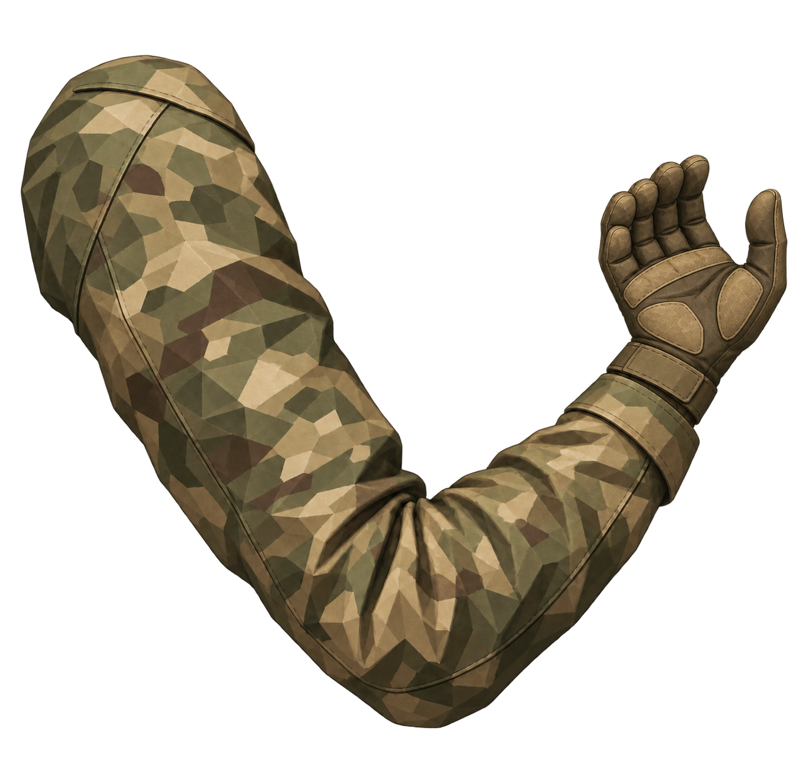

<!doctype html><html lang="uk"><meta charset="utf-8"><meta name="viewport" content="width=device-width,initial-scale=1"><title>Набір спрайтів 017</title><style>body{margin:0;background:#1b2421;color:#e9e5d9;font:16px system-ui}main{max-width:1100px;margin:auto;padding:22px}header{display:flex;gap:18px;align-items:center;flex-wrap:wrap}button,select,a{font:inherit;color:inherit;background:#36453b;border:1px solid #71816b;padding:9px;border-radius:5px}canvas{width:min(100%,512px);background:#a8a99e;border-radius:8px}section{display:flex;gap:24px;flex-wrap:wrap;margin-top:18px}aside{max-width:460px}img{width:440px;max-width:100%;background:#879087}p{line-height:1.6}</style><main><h1>Чоловічий персонаж · набір спрайтів</h1><header><label><input id="equipped" type="checkbox" checked>Камуфляж + готова голова</label><label><input id="vest" type="checkbox" checked>Розгрузка</label><label><input id="gun" type="checkbox" checked>Зброя</label><label><input id="motion" type="checkbox" checked>Дихання</label><button id="fire">Віддача</button></header><section><canvas id="view" width="512" height="768"></canvas><aside><p>Окремі PNG: дві форми, дві голови, чотири руки, розгрузка й гвинтівка. Перемикач комплекту одночасно замінює одяг, рукави та голову.</p><a href="sprites/arm-left-camo.png" download>Ліва рука PNG</a> <a href="pack.json" download>Точки кріплення</a><p>Ліва підтримувальна рука · виправлений спрайт</p></aside></section></main><script src="renderer.js"></script></html>

